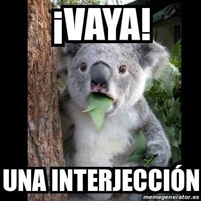

Interjección
• Definición propia: Son expresiones directas y espontáneas que lanzamos para transmitir una emoción fuerte o una reacción rápida, y casi siempre van entre signos de exclamación.
• Banco de palabras: ¡Ay!, ¡uf!, ¡cuidado!, ¡genial!, ¡hola!.
• Oración de aplicación: ¡Uf!, por fin terminamos de respaldar toda la información de la base de datos.
